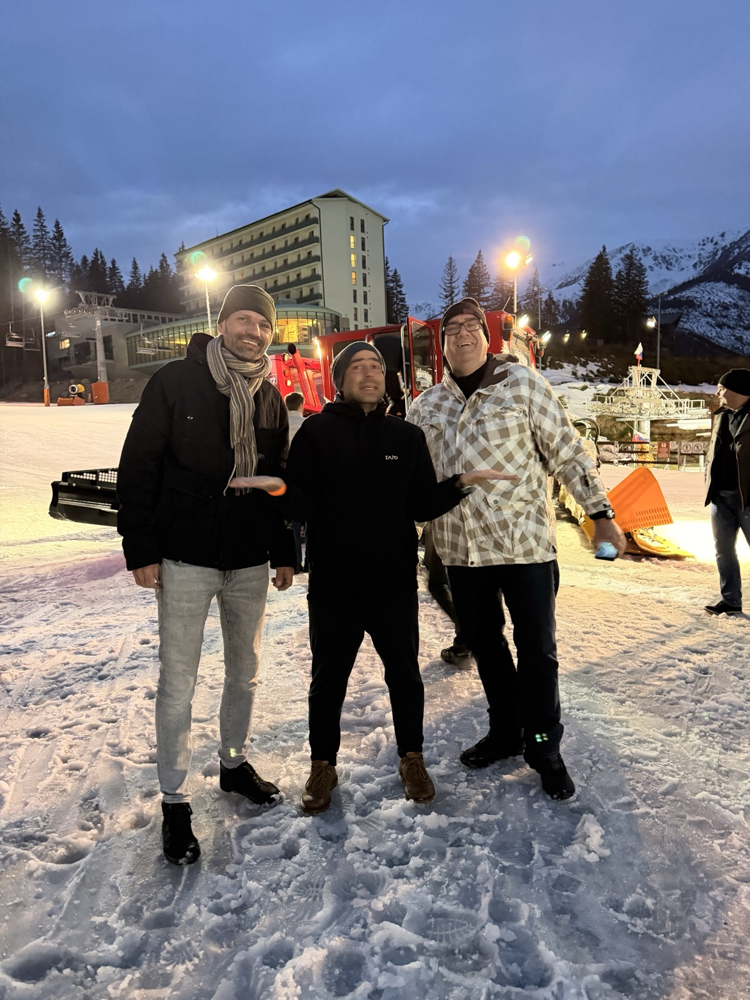
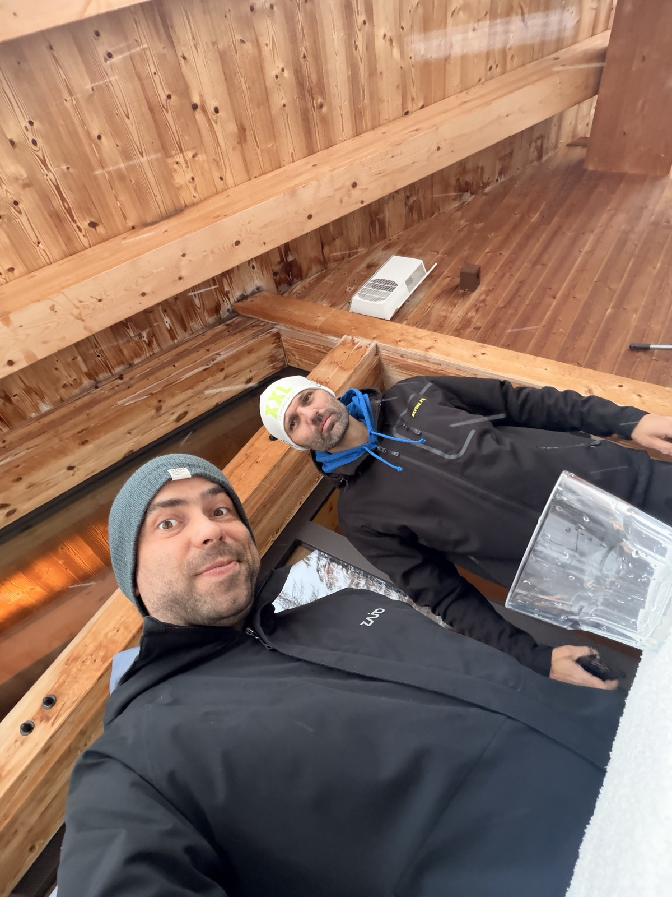

Ad hoc stretnutie na pumpe v piatok po ceste z konferencie v Jasnej. Mustra success fee napísaná v aute. Vlastné peniaze do rizika za výsledok klienta. Tri Go Beyond momenty v jednom týždni.
Marec sa lámal a klient otvorene zvažoval, či vôbec ostane. Paušál bežal, výsledky nesedeli. Kampane fungovali, ale dopyt po brande Nebbia kolísal a celkový obrat zaostával.

Piatok, po ceste z konferencie v Jasnej. Mimo kalendára, bez prezentácie, bez výhovoriek. Iba auto, káva na pumpe a celý záber od Google Ads cez UX webu až po proces vratiek. Toto je Go Beyond v praxi.
Prečo PNO kolíše pri schodíkovitom uvoľňovaní rozpočtov a ako súvisí so závislosťou na brande Nebbia.
Premium reseller status, sekcia O nás, reálne fotografie. Konkrétne odporúčania na webdevelopera v zdieľanom dokumente.
Inteligentný formulár na vrátenie tovaru. Aktívny zber recenzií. Rýchla platba Apple Pay v košíku. Veci, ktoré zvyšujú konverziu mimo reklamy.
Pavol nahral celú situáciu klienta priamo z auta. Cez správne postavený prompt vznikla štruktúra, ktorú Ivan obratom adaptoval na reálny návrh.
Obrat 40 000 €, PNO 27 %, brand závislosť na Nebbii, GA4 anomálie. Žiadne prikrášľovanie.
80 000 € v marci nie je reálne bez navýšenia investícií alebo zmeny vstupov. Ale výkon kampaní nie je v zlyhaní, problém je v objeme dopytu.
Tvrdý performance režim. Kampane bez výkonu von. Paralelne zvyšovanie konverzného pomeru a príprava na sezónu apríl až máj.
Variable fee model. Win-win konštrukcia. Klient je zrazu náš partner, nie obeť čísel.
Ondrej Lipták okomentoval návrh priamo v dokumente. Ivan upravil. Klient cez víkend prečítal a v utorok 7. apríla podpísal.
Najsilnejším signálom nebolo to, že klient zostal. Bolo to, že nám otvoril prístupy, do ktorých sme predtým nevideli.
Prístup k interným číslam predaja a marží, ktoré boli predtým mimo náš dosah. Vieme tlačiť rozhodnutia tam, kde to dáva zmysel.
Priame zadávanie taskov vývojárovi klienta. UX a CRO odporúčania sa nevracajú v poštovom mailingu, idú rovno do realizácie.
Jeden hlas voči klientovi (Ivan), jasná zodpovednosť. Tím sa môže sústrediť na delivery namiesto manažovania očakávaní.
Variable fee modelu rozumie len delivery, ktorý je nákladovo zvládnuteľný. Prešli sme z manuálu na AI a templaty cez API.
Kompletný audit účtu na dxfnt.github.io/nebshop-ads-audit. Bez týždňov manuálnej práce. Po zapracovaní odporúčaní môže ísť na re-audit jediným promptom.
30+ variácií search termov bez dedikovanej kampane. Brand term „nebbia podprsenka" konvertuje, generic search chýba. Peter doplnil keywords do PMAX a Search Categories.
Citácia z interného brief Jána Aštaryho: služba, čo bola historicky za 2 000 €, má ísť cez AI a templaty „za nula". Sklik, Bing, Heureka, feed automatizácie cez API. Plán, nie hotová vec. Matej odhadol prvý setup na 50 až 100 hodín.
Samotné stretnutie by len zmieklo náladu. Samotný success fee by bol len číslo na papieri. Spolu vznikla praktická ukážka, že sa nebojíme dať svoje peniaze do rizika za výsledok klienta. Druhé líce, nie marketing.

Personal touch nestihneme nahradiť dashboardom. Klient potrebuje vidieť, že rozumieme jeho biznisu, nielen jeho účtu.
Keď zdieľame riziko, klient zdieľa dáta. Trello, marže, interné čísla. Bez toho variable fee nemá ako fungovať.
Bez AI by sa nový model ekonomicky nedal odrobiť. Bez ľudí by AI nemala čo prevodiť. Kombinácia robí rozdiel.
Pri kríze platí pravidlo jedného hlasu na klienta. Ivan získal mandát a zachoval kontinuitu. To rozhodlo rovnako ako čísla.